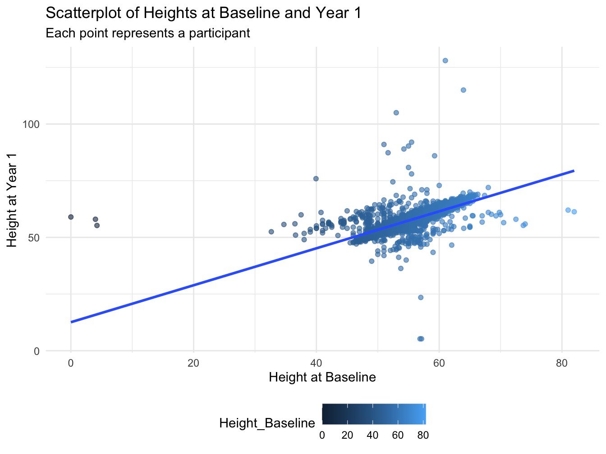

Difference Scores: Paired Samples T-test
Overview
Difference scores can be used to assess change in a variable across two timepoints. The value of the variable at the first timepoint is substracted from the value at the second timepoint. A one-sample t-test can then be applied to determine whether the mean change is significantly different from zero.
This example will examine height values obtained across 2 annual measurement occasions in a sample of youth taking part in the ABCD Study. The primary aim is to determine whether height values in the sample, on average, increase across the two timempoints. A difference score will be calculated between participant’s height values collected at baseline and again at the 1-year follow-up. Next, a one-sample t-test will be used to test whether the difference score is statistically different than a null hypothesis of zero change. Finally, a visual inspection is further conducted via a scatterplot to graphically represent the relationship between participant’s height across assessments.
Preliminary Setup
Load R libraries
Descriptives
Code
descriptives_table <- df_long %>%
select(event, height) %>%
mutate(event = factor(event)) %>%
tbl_summary(
by = event,
missing = "no",
label = list(height ~ "Height"),
statistic = list(all_continuous() ~ "{mean} ({sd})", all_categorical() ~ "{p}%"),
) %>%
modify_header(all_stat_cols() ~ "**{level}**<br>N = {n}") %>%
bold_labels() %>%
italicize_levels() %>%
modify_spanning_header(all_stat_cols() ~ "**Assessment Wave**")
theme_gtsummary_compact()
descriptives_table| Characteristic | Assessment Wave | |
|---|---|---|
| Baseline N = 118591 |
Year_1 N = 111421 |
|
| Height | 55.2 (3.3) | 57.6 (3.7) |
| 1 Mean (SD) | ||
Results
Compute Difference Score
This code computes a difference score by subtracting participant’s height at baseline from height at the 1-year follow-up. Next, a one-sample t-test is conducted to determine whether the mean difference score is different from zero. Model output is provided below, as well as a brief summary of results.
Code
# Reshaping data from long to wide
df_wide <- df_long %>%
pivot_wider(
id_cols = id,
names_from = event,
values_from = height,
names_prefix = "Height_"
)
# Compute the height difference score
df_wide <- df_wide %>%
mutate(
height_diff = Height_Year_1 - Height_Baseline
)
# Calculate summary statistics for the difference score
summary(df_wide$height_diff) Min. 1st Qu. Median Mean 3rd Qu. Max. NA's
-52 2 2 2 3 67 729 Code
The summary statistics provide insights into participant’s height across two annual assessments. At baseline, the average height is 55.24 inches (sd = 3.33). Over the year, there is an increase of 2.35 inches in average height to 57.59 inches at the time of the 1-year follow-up.
Conduct t-test on Difference Score
A one-sample t-test is computed on the difference scores to examine whether there is evidence of change in participant’s height between the two timepoints.
Code
One Sample t-test
data: df_wide$height_diff
t = 99, df = 11135, p-value <2e-16
alternative hypothesis: true mean is not equal to 0
95 percent confidence interval:
2.32 2.41
sample estimates:
mean of x
2.37 The results from the one-sample t-test conducted on the height difference scores reveals an increase in height from Baseline to Year 1. The t-test yields a t-value of 98.86 with a p-value less than <.001, indicating that the average height increase of 2.36 inches is significantly different from zero. Additionally, the 95% confidence interval indicates that the true mean difference score in the population lies between approximately 2.31 to 2.41 inches.
Model Plots
Code
# Scatterplot to compare height differences across two events
ggplot(df_wide, aes(x = Height_Baseline, y = Height_Year_1)) +
geom_point(aes(color = Height_Baseline), alpha = 0.6) + # Color points by event type, adjust for your data
labs(
x = "Height at Baseline",
y = "Height at Year 1",
title = "Scatterplot of Heights at Baseline and Year 1",
subtitle = "Each point represents a participant"
) +
theme_minimal() +
geom_smooth(method = "lm", se = FALSE) + # Add a regression line without confidence interval
theme(legend.position = "bottom")
The scatterplot visually depicts the relationship between individuals’ heights at baseline and their heights at year 1. Each point on the plot represents an individual, with their baseline height plotted on the x-axis and their year 1 height on the y-axis. A noticeable positive linear trend can be observed, as highlighted by the blue regression line, indicating that those who were taller at baseline generally remained taller at year 1. The strength and direction of this relationship suggests a strong positive association between baseline and year 1 height values.
Wrapping Up
This analysis examined difference scores of participant’s height using a one-sample t-test. Findings showed a significant increase in height values over the one-year interval of 2.36 inches, with confidence intervals ranging from 2.31 to 2.41 (t = 98.864, df = 11135, p-value < 2.2e-16). Further, a scatterplot visualizing the relationship between baseline and Year_1 weights showed a strong positive linear trend. This suggests that participants who were taller at baseline generally remained taller at Year_1, reaffirming the consistent growth trend observed in the data.
This difference score approach used in this example quantifies the change in height values over time within a single group and uses a one-sample t-test to test whether this value differs significanctly from 0. More generally, this approach is often implemented when data used to evalaute change is only available at two timepoints, as more flexible approaches are typically implemented when data from additional (>2) time points is available.